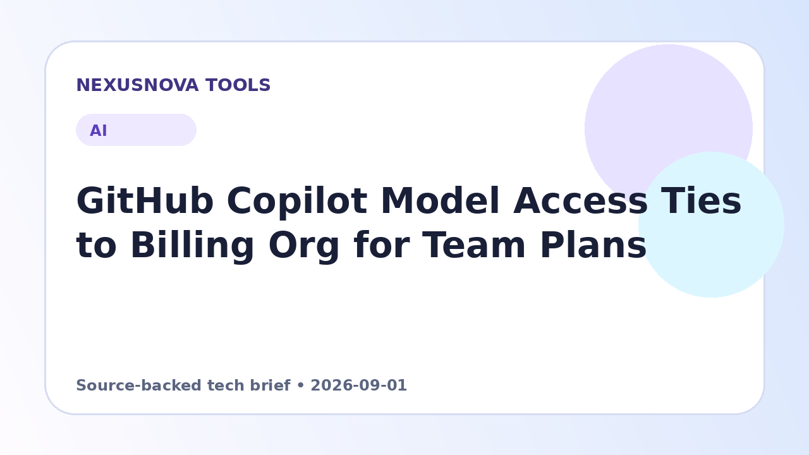

GitHub Copilot Model Access Ties to Billing Org for Team Plans
GitHub has adjusted its policy enforcement so that an individual's Copilot model access is governed strictly by the organization responsible for billing.
Published 2026-09-01 • NexusNova Editorial Team

New Policy Rules for Multi-Organization Users
GitHub has revised how model availability is enforced for developers who maintain active GitHub Copilot seats across more than one organization under GitHub Team plans.
Under the previous framework, a developer holding seats across multiple organizations could access an AI model if any one of those organizations permitted it. Under the updated rules, model permissions are now dictated exclusively by the specific organization that pays for the user's active Copilot consumption.
This adjustment was introduced to maintain consistent alignment between organizational billing and security governance, ensuring paying entities have absolute control over the specific tools and models used on their accounts.
Impact on Enterprise Accounts and User Configurations
The change specifically targets multi-seat Team plan configurations. Developers who receive their Copilot access completely through an enterprise account, or organizations managed under an enterprise umbrella, remain unaffected by this shift.
To check which organization currently governs model permissions, users can navigate to the Copilot features management area in GitHub and locate the specific entity listed under the usage billing section.
Practical next steps
- Navigate to the GitHub Copilot features settings page in your account.
- Inspect the 'Usage billed to' field to identify which organization controls your current model policies.
- Verify with that organization's administrator if specific AI models need to be enabled for your workflow.